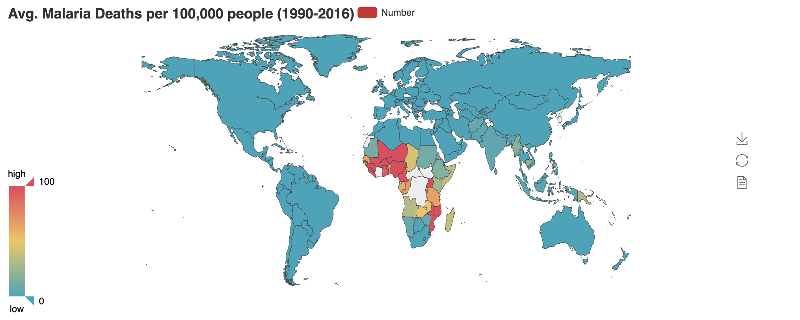

Malaria is caused by parasites from the genus Plasmodium, which could be spread to people by the bite of infected mosquitoes. In 2017, there were 219 million malaria cases that led to 435,000 deaths Malaria is an urgent public health priority for past decade. It has been estimated that around half of the world population are at risk today. Therefore, analysis on Malaria is useful in terms of global public health for research in preventive measures. I would like to share three visualizations using an online dataset. These plots are generated by Python. Link to the Jupyter Notebook
- Plot 1 Avg. Malaria Deaths per 100,000 people (1990-2016)
Based on recent statistics, Africa carries a disproportionately high portion of the global malaria burden. As shown from the following heatmap measuring the number of death per 1000 people worldwide from 1990 to 2016. By the heavy concentration of red color on the map, it seems that most malaria cases and deaths occur in sub-Saharan Africa.

- Plot 2 Number of Worldwide Malaria Deaths categorized by Age (1990-2016)
Most victims of Malaria are children. It is estimated to be one of the leading causes of child mortality. This could be demonstrated by the following plot. From 1990-2016, in terms of the total Malaria deaths, 77% of them are children under 5.
- Plot 3 Number of Top 10 Countries with most Malaria Deaths (1990-2016)
Noy only sub-Saharan Africa has suffered most from Malaria, Nigeria and Congo are countries most affected by Malaria in the world. Nigeria alone accounts for 29.1% of total deaths caused by Malaria, and this number at Congo is 11.3%. The 10 most affected countries took up 76% of total Malaria deaths while the rest of world only accounts for 24.0% (1990-2016). Medical prevention of Malaria should be regarded as a top priority for these countries.
That’s all for this blog. Thanks for reading!
Let me know if you have any comments/question. Feel free to find me at yuan.feng347@duke.edu